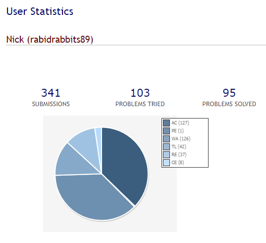
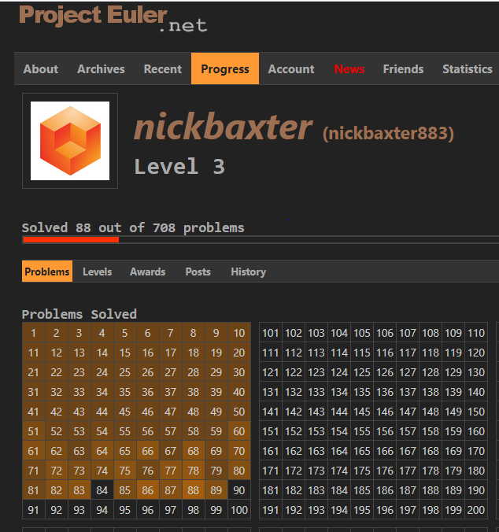
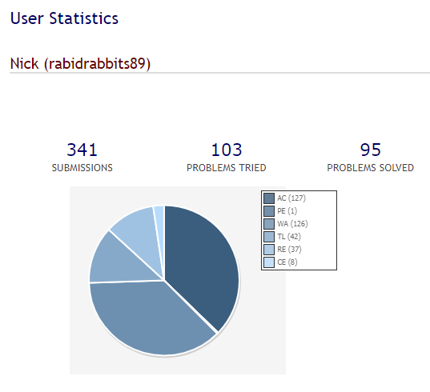
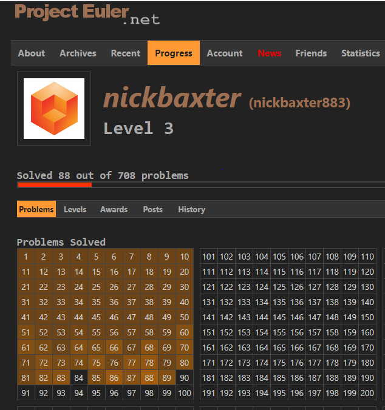

This site has a snazzy interface!



A fun team competition from way back in College
Single-player multi-agent 2D puzzle game
Using Pygame
Creating assets in Aesprite
Under heavy construction
Graph of word transformations by adding, deleting, or changing one letter at a time.
Using Python with the networkX, GraphViz, PyQt5 modules.
See the About tab
Gives spherical coordinate angle solutions for when one arbitrarily sized box will fit inside another arbitrarily sized box
2D angle-angle plots for solutions to the three and combined x, y, z axis
Interactive 3D viz that responds to input box size and clicking angle-angle plots
Matplotlib does not seem to handle the 3D occlusion well
Find equal products with the maximum number of unique terms less than a given value. ex 2*3*6=4*9
A webscraper that finds all the pdf for piano and only piano on Ichigos Anime music page
Ideally scraping a webpage is cleaner than this, but this guy did not put any #ids or css-classes in his html to select on!
Categorizes how many squares it takes to sum to a given number
"An integer greater than one can be written as a sum of two squares if and only if its prime decomposition contains no prime congruent to 3 modulo 4 raised to an odd power."
This site has a snazzy interface!


A fun team competition from way back in College